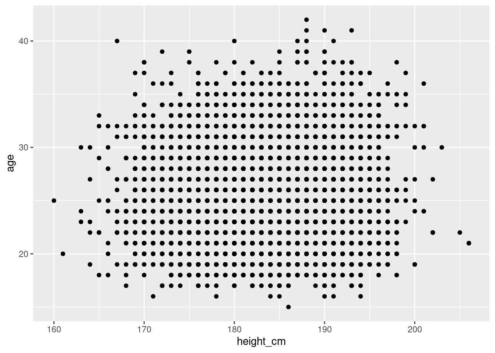
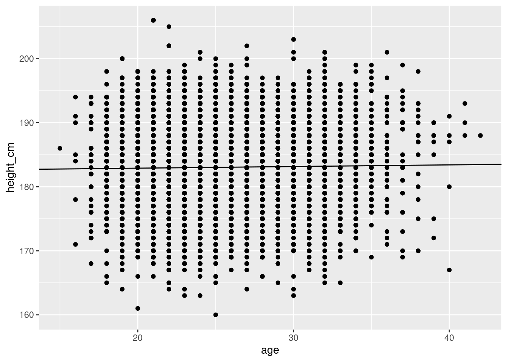
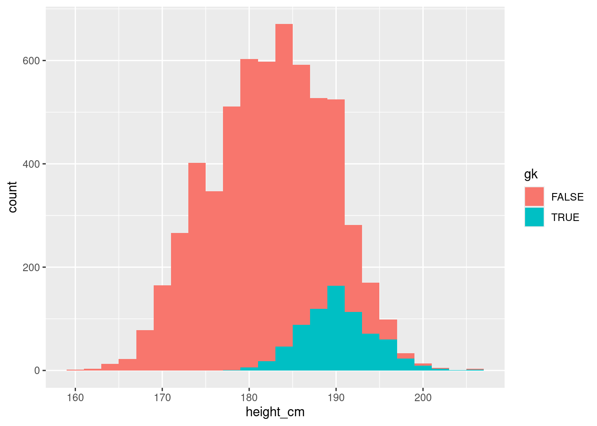
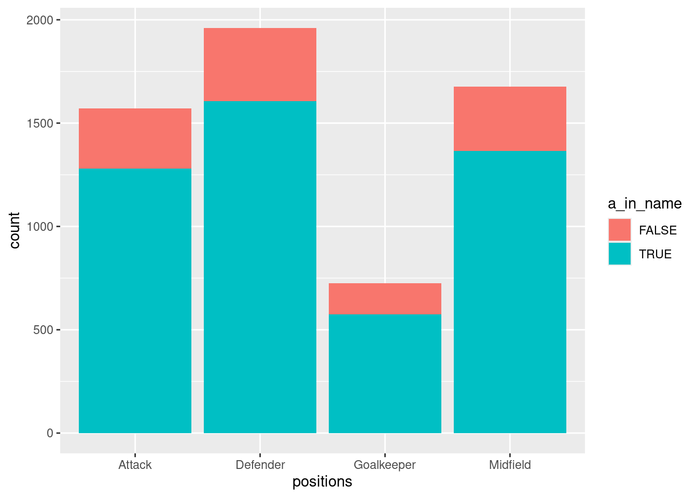
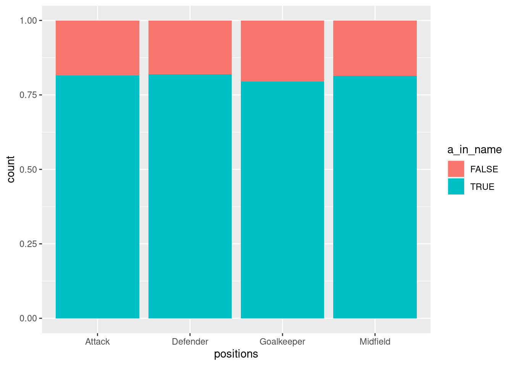
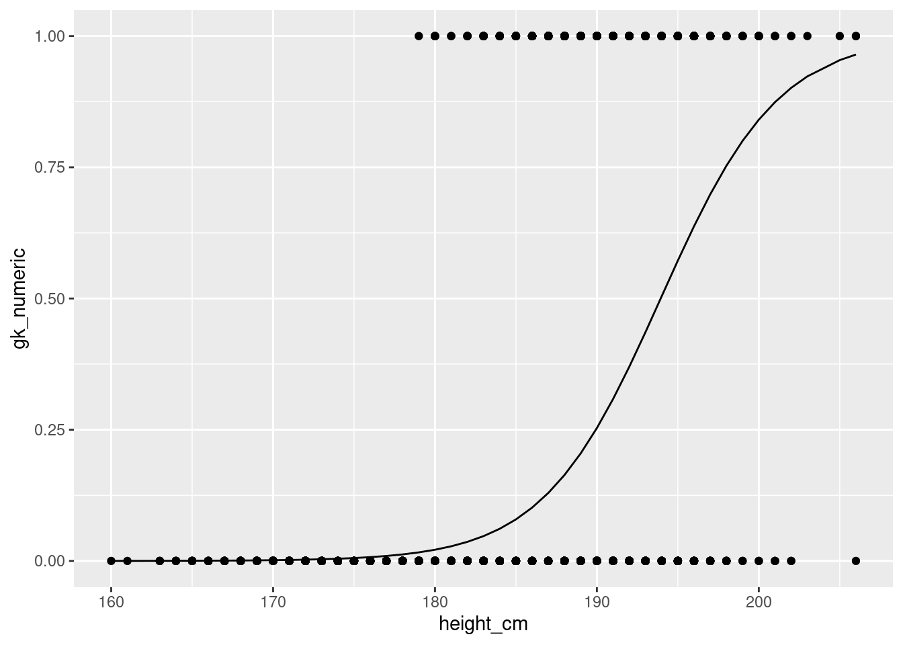

library(dplyr)
players <- read.csv("../../data/Players2024.csv")
players <- players %>% filter(positions != "Missing", height_cm > 100)Statistics
This session is aimed as an overview of how to perform some statistical modelling with R. It is an R workshop, not a statistics workshop - if you’d like to better understand the statistical models, or need help deciding what’s best for you, please consult a statistics resource or contact a statistician.
In this session, we’ll cover
- Descriptive statistics
- Measures of central tendancy
- Measures of variability
- Measures of correlation
- Inferential statistics
- Linear regressions
- Calculating confidence intervals
- T-tests
- \(\chi^2\) test
- ANOVAs
We’ll be working from our “Players2024” dataset. After downloading it and putting it in your data folder, to bring it in and clean it up,
Attaching package: 'dplyr'The following objects are masked from 'package:stats':
filter, lagThe following objects are masked from 'package:base':
intersect, setdiff, setequal, unionDescriptive Statistics
We’ll start with sample size. To calculate the number of non-empty observations in a column, say the numeric variable players$height_cm, we use the length() function
length(players$height_cm)[1] 5932We can compute measures of central tendancy similarly. The average value is given by
mean(players$height_cm)[1] 183.0413and the median by
median(players$height_cm)[1] 183Measures of variance
We can also compute measures of variance. The minimum and maximum are as expected
min(players$height_cm)[1] 160max(players$height_cm)[1] 206The function range() yields both
range(players$height_cm)[1] 160 206So the actual range, i.e. the difference, is
diff(range(players$height_cm))[1] 46Quartiles are given by quantile() and the inter-quartile range (IQR) by IQR():
quantile(players$height_cm) 0% 25% 50% 75% 100%
160 178 183 188 206 IQR(players$height_cm)[1] 10A column’s standard deviation and variance are given by
sd(players$height_cm)[1] 6.838736var(players$height_cm)[1] 46.76832All together, you can see a nice statistical summary with
summary(players$height_cm) Min. 1st Qu. Median Mean 3rd Qu. Max.
160 178 183 183 188 206 Measures of correlation
If you’ve got two numeric variables, you might want to examine covariance and correlation. These indicate how strongly the variables are linearly related. We’ll need to use the players$age variable as well.
The covariance between “height_cm” and “age” is
cov(players$height_cm, players$age)[1] 0.5126608Similarly, we can find the Pearson correlation coefficient between two columns.
cor(players$height_cm, players$age)[1] 0.01682598You can also specify “kendall” or “spearman” for their respective correlation coefficients
cor(players$height_cm, players$age, method = "kendall")[1] 0.005417946cor(players$height_cm, players$age, method = "spearman")[1] 0.007604345Reminder about groupbys
Before we move to inferential statistics, it’s worth reiterating the power of groupbys discussed in the second workshop.
To group by a specific variable, like “positions”, we use
players %>%
group_by(positions)# A tibble: 5,932 × 7
# Groups: positions [4]
name birth_date height_cm positions nationality age club
<chr> <chr> <dbl> <chr> <chr> <int> <chr>
1 James Milner 1986-01-04 175 Midfield England 38 Bright…
2 Anastasios Tsokanis 1991-05-02 176 Midfield Greece 33 Volou …
3 Jonas Hofmann 1992-07-14 176 Midfield Germany 32 Bayer …
4 Pepe Reina 1982-08-31 188 Goalkeeper Spain 42 Calcio…
5 Lionel Carole 1991-04-12 180 Defender France 33 Kayser…
6 Ludovic Butelle 1983-04-03 188 Goalkeeper France 41 Stade …
7 Daley Blind 1990-03-09 180 Defender Netherlands 34 Girona…
8 Craig Gordon 1982-12-31 193 Goalkeeper Scotland 41 Heart …
9 Dimitrios Sotiriou 1987-09-13 185 Goalkeeper Greece 37 Omilos…
10 Alessio Cragno 1994-06-28 184 Goalkeeper Italy 30 Associ…
# ℹ 5,922 more rowsBy applying our statistics to the group_by object, we’ll apply them to every variable for each position.
players %>%
group_by(positions) %>%
summarise(mean_height = mean(height_cm))# A tibble: 4 × 2
positions mean_height
<chr> <dbl>
1 Attack 181.
2 Defender 184.
3 Goalkeeper 191.
4 Midfield 180.Inferential Statistics
While descriptive statistics describes the data definitively, inferential statistics aim to produce models for extrapolating conlusions.
Simple linear regressions
Least-squares regression for two sets of measurements can be performed with the function lm. Recall that linear regressions have the mathematical form
\[ Y = β_1 X + β_0 \]
where \(β_1\) is the slope (or gradient) of the line and \(β_0\) the y-intercept. We use the regression tool to estimate the parameters \(β_0\,,β_1\).
A linear model (like above) is one example of the more general relationship \(Y\sim X\), where \(Y\) is distributed as \(X\) (or, \(Y\) depends on \(X\)). For this reason, we can construct a linear model in R with three pieces of information
- The type of model (e.g. linear) as a function (e.g.
lm(...)) - The general relationship between variables as a string (e.g.
"height_cm ~ age") - The dataset we’re using (e.g.
players)
lm(formula = "height_cm ~ age", data = players)
Call:
lm(formula = "height_cm ~ age", data = players)
Coefficients:
(Intercept) age
182.38260 0.02583
TipR formula syntax
Performing statistical modelling with R inevitably requires using R’s powerful formula syntax, as we just did with `“height_cm ~ age”. For anything beyond simple linear regressions, you’ll need to include more terms and operators in these. Here’s a quick summary of a few, but you should check out this handy blog post for a better summary and the official documentation for comprehensive details.
~Use ~ to separate the \(Y\) variable from the \(X\) variable(s), e.g. y ~ x.
+Add multiple \(X\) variables, e.g. y ~ x + z (for variable z)
:Consider the interaction between two variables, e.g. y ~ x:z.
-Remove variables, e.g. y ~ x - 1 (removes the intercept).
If we store this as a variable, we can then produce a summary of the results (note that we can remove the formula = and data = if the order is correct),
model <- lm("height_cm ~ age", players)
summary(model)
Call:
lm(formula = "height_cm ~ age", data = players)
Residuals:
Min 1Q Median 3Q Max
-23.028 -5.028 0.075 4.978 23.075
Coefficients:
Estimate Std. Error t value Pr(>|t|)
(Intercept) 182.38260 0.51599 353.460 <2e-16 ***
age 0.02583 0.01993 1.296 0.195
---
Signif. codes: 0 '***' 0.001 '**' 0.01 '*' 0.05 '.' 0.1 ' ' 1
Residual standard error: 6.838 on 5930 degrees of freedom
Multiple R-squared: 0.0002831, Adjusted R-squared: 0.0001145
F-statistic: 1.679 on 1 and 5930 DF, p-value: 0.1951If you want to get specific parameters out, we can index with $:
summary(model)$r.squared[1] 0.0002831136That’s a pretty shocking fit.
Plotting it
Naturally, you’d want to plot this. We’ll need to use techniques from the visualisation session. Let’s import ggplot2
library(ggplot2)Start by making a scatterplot of the data,
ggplot(players, aes(x = height_cm, y = age)) +
geom_point()
Then, you’ll need to plot the regression as a line. For reference,
\[ y = \text{slope}\times x + \text{intercept}\]
So
b0 <- model$coefficients[1]
b1 <- model$coefficients[2]
ggplot(players, aes(x = age, y = height_cm)) +
geom_point() +
geom_abline(intercept = b0, slope = b1)
\(t\)-tests
We can also perform \(t\)-tests. Typically, these are performed to examine the statistical signficance of a difference between two samples’ means. Let’s examine whether that earlier groupby result for is accurate for heights, specifically, are goalkeepers taller than non-goalkeepers?
Let’s start by creating a new column with the values
FALSE |
Non-goalkeeper |
TRUE |
Goalkeeper |
players <- players %>%
mutate(gk = positions == "Goalkeeper")The \(t\)-test’s goal is to check whether \(\text{height\_cm}\) depends on \(\text{gk}\), so the formula is \(\text{height\_cm}\sim\text{gk}\). This is given to the t.test function:
t.test(height_cm ~ gk, data = players)
Welch Two Sample t-test
data: height_cm by gk
t = -48.817, df = 1274.4, p-value < 2.2e-16
alternative hypothesis: true difference in means between group FALSE and group TRUE is not equal to 0
95 percent confidence interval:
-9.036644 -8.338391
sample estimates:
mean in group FALSE mean in group TRUE
181.9810 190.6685 Yielding a p-value of \(p<2.2\times10^{-16}\), indicating that the null-hypothesis (heights are the same) is extremely unlikely.
To visualise this result, it might be helpful to produce a histogram of the heights
ggplot(players,
aes(x = height_cm, fill = gk)) +
geom_histogram(bins = 24)
ANOVAs
What about the means of the other three? We could use an ANOVA to examine them. We use the aov() function for this.
Let’s start by making a new dataset without goalkeepers
no_gk <- players %>% filter(gk == FALSE)Next, we save the analysis of variance results
res_aov <- aov(height_cm ~ positions, data = no_gk)And examine them with summary()
summary(res_aov) Df Sum Sq Mean Sq F value Pr(>F)
positions 2 15470 7735 199.7 <2e-16 ***
Residuals 5205 201552 39
---
Signif. codes: 0 '***' 0.001 '**' 0.01 '*' 0.05 '.' 0.1 ' ' 1Even without goalkeepers included, it looks like their positions are not all independent of height.
\(\chi^2\) tests
\(χ^2\) tests are useful for examining the relationship of categorical variables by comparing the frequencies of each. Often, you’d use this if you can make a contingency table.
We only have one useful categorical variable here, “positions” (the others have too many unique values), so we’ll need to create another. Let’s see if there’s a relationship between players’ positions and names with the letter “a”.
Make a binary column for players with the letter “a” in their names. To do this, we need to apply a string method to all the columns in the dataframe as follows
players <- players %>%
mutate(a_in_name = grepl("a", name))The
greplfunction perform pattern matching: it checks if the pattern"a"is inside the values inname.
Let’s cross tabulate positions with this new column
table(players$positions, players$a_in_name)
FALSE TRUE
Attack 291 1280
Defender 355 1606
Goalkeeper 149 575
Midfield 312 1364The \(χ^2\) test’s job is to examine whether players’ positions depend on the presence of “a” in their name. To evaluate it we need to send the contingency table in:
chisq.test(table(players$positions, players$a_in_name))
Pearson's Chi-squared test
data: table(players$positions, players$a_in_name)
X-squared = 2.1808, df = 3, p-value = 0.5357As expected, there is no signifcant relationship. A simple bar plot can help us here
ggplot(players,
aes(x = positions, fill = a_in_name)) +
geom_bar()
If we use the position = "fill" parameter to geom_bar, we’ll see each as a proportion
ggplot(players,
aes(x = positions, fill = a_in_name)) +
geom_bar(position = "fill")
It looks as though the proportions are much the same.
Generalised linear models
We’ll finish by looking at Generalised Linear Models. The distributions they include are
- Binomial
- Poisson
- Gaussian (Normal)
- Gamma
- Inverse Gaussian
- A few quasi options
We’ll use the binomial option to create logistic regressions.
Logistic regressions examine the distribution of binary data. For us, we can compare the heights of goalkeepers vs non-goalkeepers again.
Now, we can model this column with height. We’ll do the same as our \(t\)-test case, but this time we need to specify that family = binomial to ensure we’ll get a logistic:
res_logistic <- glm(gk ~ height_cm, family = binomial, data = players)We can take a look at the results with
summary(res_logistic)
Call:
glm(formula = gk ~ height_cm, family = binomial, data = players)
Coefficients:
Estimate Std. Error z value Pr(>|z|)
(Intercept) -53.23360 1.92714 -27.62 <2e-16 ***
height_cm 0.27448 0.01019 26.94 <2e-16 ***
---
Signif. codes: 0 '***' 0.001 '**' 0.01 '*' 0.05 '.' 0.1 ' ' 1
(Dispersion parameter for binomial family taken to be 1)
Null deviance: 4401.4 on 5931 degrees of freedom
Residual deviance: 3167.0 on 5930 degrees of freedom
AIC: 3171
Number of Fisher Scoring iterations: 6And we can then visualise it with ggplot2. We need to make another variable, because we need to replace TRUE \(\rightarrow\) 1 and FALSE \(\rightarrow\) 0 for the plot.
players <- players %>% mutate(gk_numeric = as.numeric(gk))Now we can plot the logistic regression. The fitted values (on the \(y\)-axis) are stored in res_logistic$fitted.values, but there are no provided \(x\)-values - these come from the players dataset. Use geom_point() for the data and geom_line() for the fit:
ggplot(players, aes(x = height_cm, y = gk_numeric)) +
geom_point() +
geom_line(aes(y = res_logistic$fitted.values))